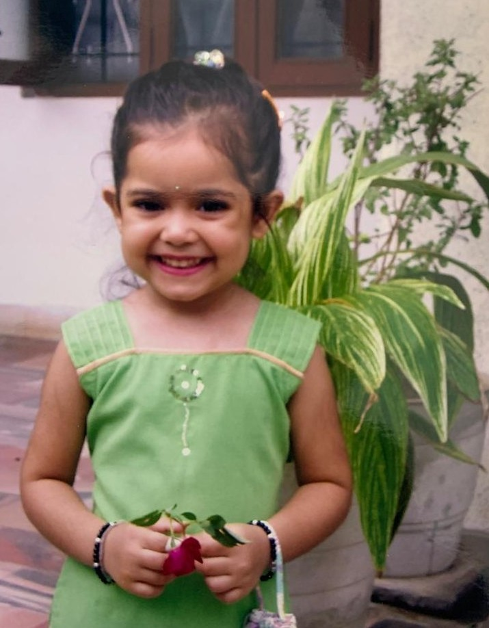

KayFlix Original
24 Years of Kay
A birthday story about her life, her favourite people, her funniest moments, her biggest adventures, and every beautiful chapter still to come.

24th Birthday Special
Who's Watching?

Kay ❤️
Main character since day one.
Continue Watching
The Life of Kay
Seasons
Every Era Has a Story
Episodes
Memory Library
Achievements
Unlocked by Kay
Finale
Kay's Timeline
A cute horizontal snapshot of her memories. Add a year, month, or exact date to each memory, and this timeline will arrange the story beautifully.
Still To Come